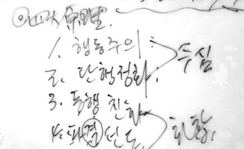
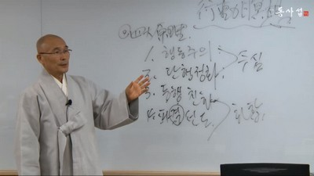

一般課程 － 22 講 ( 動映像받아쓰기) －
第 18 講 行動 暝想
안녕하세요.
行動 暝想이라고 하면 여러分들 속에 키포인트로 무엇이 확 느껴져요? 行動 暝想이라고 하면 여러分들 속에 어떤 메시지가 옵니까? 아니면 行動 暝想의 메시지가 여러分들 속에서 뿜어져 나와야 할 겁니다.
行動 暝想이라고 하면 우선 行動이 떠오를 것이고, 그 行動은 暝想이라는 말이 붙여지는 行動이기 때문에 약간 일상성을 넘어선 行動일 겁니다. 물론 일상的인 모든 行動들이 아주 넓은 意味로 전부 暝想이 될 수가 있기는 합니다. 그런데 行動 暝想이라고 具體的으로 장르를 정해놓고 그것을 工夫를 한다 할 때는 일상 속에서 하는 숨쉬고, 밥 먹고, 걸어 다니고 (걷기 暝想도 있습니다만) 등등의 일상 的인 行動이 아닌, 그 범주를 넘어선 어떤 行動을 暝想 으로 끌어오는 겁니다.
일상的인 것이 아니기 때문에 行動 暝想해보자 할 때 그 行動은 약간 의도的으로 해야 되고 좀 껄끄러울 수가 있습니다. 그런데 일상성을 넘어선 行動 들이 暝想的인 가치가 있고, 우리 모두의 幸福에 도움이 될 만한 行動이라고 한다면 그걸 저지르면서 살리라 하고 그것을 저지르는 것. 이런 것이 行動 暝想 입니다. 그냥 일상的으로 自然히 하는 숨쉬기, 잠자고 일어나기. 물 마시기, 이런 것은 하지 마라 해도 하니까 그런 건 그냥 두고, 잘 안 하는 어떤 것을 해보자 할 때에는 의미가 있으니까 해보자는 것입니다. 그 의미란 무엇일까요? 우리들의 幸福에 도움이 되니까 해보자고 하는 거예요. 또 暝想的인 성과가 있는 것이니까 해보자고 하는 것입니다. 그러면 그런 것이 주어졌을 때 여러 分들은 어떤 쪽입니까? 탁탁 저질러서 잘하는 편이예요, 아니면 안하는 편이예요? 껄끄러워서 잘 못하지요.特 히 우리 아버지, 할아버지 그 시대 사람들은 그것을 잘 못합니다.
내가 오늘 아침에 세 사람이서 엘리베이터를 탔는데 엘리베이터 空間에서 무엇인가 暝想을 한 자락 해야 되겠더라고요. 그래서 내가 딱 쳐다보면서 하하하하, 으하하하하하, 했어요. 그랬더니 두 사람이, 아니 무얼 보시고 보고 저러시나, 하면서 막 위를 쳐다봅니다. 그래서 내가, 아니, 왜 거길 봐? 웃는 여기를 봐야지, 했습니다. 말하자면 파격的인 것이거든. 그러한 것들이 行動 暝想인 거예요. 그런 行動 暝想이 여러 分들에게 必要한 瞬間들이 분명히 있어요. 그때는 의도的 으로 저질러서 잘 해보자는 겁니다.
그러면 行動 暝想이라고 하는 이 主題를 通해서 여러 分들이 손에 건져야 할 것은 네 가지 原理입니다. 그 네 가지만 건져서 배경에 가지고 있게 되면 여러 分들은 行動 暝想的인 次元에서 자재로워 질 겁니다.
제일 먼저 1번 原理는 行動主義原理입니다. 行動主義라고 하면 여러分들은 개념이 또 어떻게 떠오릅니까? 行動主義반대는 心理主義라고 할 수 있습니다. 심리학에서 行動主義라는 말은 쓰는 것 같은데 心理主義란 말은 쓰는지 어쩐지 모르겠습니다마는 내가 그냥 만들어서 씁니다. 마음이 어찌어찌 해야 어떤 결과물이 나오니 마음을 어찌 어찌 하라. 이것이 心理主義입니다. 行動主義는 行動을 어떻게 하면 어떻게 좋아지는 법이니, 그 行動을 하라. 이렇게 行動에 엑센트가 찍혀 있는 것이 行動主義입니다. 쉬운 表現으로 하자면 마음이 幸福하면 웃음이 나오는 법이니 마음을 幸福하게 해라. 이것은 心理主義 입니다. 그런데 웃는다는 行動을 하면 마음이 幸福해지는 법이니 웃음을 웃어라. 이것이 行動主義입니다. 그러면 여러分들은 心理主義的인 경향을 가지고 있어요? 行動主義的인 경향을 가지고 있어요? 옛날, 고전的인 것은 단연 心理主義였습니다. 프로이드 시대는 단연 心理主義였습니다. 마음속에 있는 모든 갈등, 모든 불안한 요인들이 다 解決되어야 幸福하게 살고 世上에 적응을 잘하는 것이니 이 問題를 解決 하라. 그래서 프로이드的인 精神분석적 카운셀링을 6개월, 1년, 2년, 3년 막 이렇게 하기도 했었어요. 只今도 비슷한 상황입니다.

그런데 훗날 行動主義가 나와서... 行動主義접근법 개발자를 모르고 써먹어서 유감인데 여러 分들 인터넷에서 찾아 보세요. 이거 講義자로 해서 부끄러운 일이네. 行動主義접근법이 나와서 편해졌어요. 心理主義라야 되느냐, 行動主義 라야 되느냐 하면 정답은 어느 쪽이겠어요? 두 개 다 필요합니다. 상황的으로 心理主義가 필요할 때는 心理主義를 쓰고, 行動主義가 필요할 때는 行動主義를 쓰는 겁니다. 그래서 이 두 개는 묘한 조화를 이루면서 우리들 삶에서 機能할 필요가 있습니다.
두 번째는 斷行淨化의 原理입니다. 단행이 무엇이지요? 의도的 으로 저지르는 것이 단행입니다. 그러면 무엇을 단행한다는 말이지요? 어떤 行動을 단행하는 겁니다. 어떤 行動 을 단행을 했더니 淨化가 되더라. 하는 原理입니다. 具體的인 예로는 울음과 웃음과 같은 것들입니다. 울음, 웃음, 憤怒를 의도的으로 표출해보라는 것입니다. 나, 우울해서 안 좋아. 만사가 싫어. 좀 웃어봐라 해도 웃음이 안 나와. 나는 속이 다 解決된 다음에나 웃을래요. 그러니까 그러고 사는 동안에 미소 근육이 완전히 죽어버리게 됩니다. 미소 근육이 緊張 근육으로 바뀐 것을 나중에 다시 미소 근육으로 바꾸려면 龍陀스님과 같은 뚝심이 아니면 어려워요 나는 이걸 바꾸려고 어찌 했는지 알아요? 으흠~~ 으흠~~하면서 억지로 입술 양쪽 끌어올리는 연습을 수년 동안 했습니다. 그래서 어떤 일이 있었다고 했지요? 서울 인성개발원에 가서 龍陀스님의 웃음은요, 좀 억지웃음 같아요, 막 그런 소리를 들었다고요. 이 말은 무엇이건 할 때는 그렇게 용을 쓰고 할 필요가 있다는 것을 의미하는 거예요. 이런 근육 하나도 의도적 단행을 通해서 되는 것입니다. 그러니 여러分들이 우울하고 뭣하고 할 때 어떻게 하라고요? 단행해버리는 겁니다. 무엇을 단행하는가? 웃음부터 단행하라 하는 겁니다. 只今 한番 웃음 단행을 한番 해 봅시다. 자, 15초만 해봅시다. 완전하게 나는 웃음이다, 나는 宇宙적 웃음이다, 하고 宇宙적 웃음 아이덴티티를 취하고 呵呵大笑 를 只今부터 15초간 해봅시다. 斷行淨化次元에서. 자 始作~!
아~~~~하하하하하하하하하하하하하하하하하 (15秒間)
옳지! 그렇게 단행을 해서 行動을 해버리면 淨化가 됩니다. 特히 웃음 같은 것이 그렇습니다. 또 단행해서 해 봄직한 것으로 울음이 있습니다. 어머니나 아버지같은 이 世上에서 가장 소중한 것을 상실했을 때 우는 듯 한 그 울음을 울어버려라. 그 울음이라는 行動을 단행하라! 저질러라. 이 斷 자는 저지를 단 자 예요. 저질러서 行動 해버린다. 자, 只今 또 한 번 해봅시다. 只今부터 10초간, 어머니 아버지 죽었으니까 10초 동안, 옆 사람 고려하지 말고 오직 이불 속에 나 혼자 있다 생각하고 只今부터 대성통곡 10초만 합시다. 자 始作 하면 10초 대성통곡…. 시~작 !!
어머니, 아이고 어머니, 아이고~~~~~~~~~~~~~~~~~~~(대성통곡)
자, 그만, 그만 합시다. 이러한 것이 단행이고, 그렇게 단행하면 淨化 현상이 오게 됩니다. 울음 같은 것은 굉장히 좋아요. 속이 막 풀립니다. 전생에 울었어야 할 울음을 모두 울고 억압했던 전생, 전생, 전생 것까지 울음을 끌어다가 只今 온전히 울어주면 전생에 울음을 억압해서 있었던 어두운 그늘이 걷혀버린다고 하는 논리입니다. 行動主義가 이 世上에 접근법으로 나왔다는 것은 대단히 좋은 일입니다. 큰 경사입니다.
또 단행의 레파토리로 憤怒 같은 게 있습니다. 憤怒 프로그램까지 있어요. 오직 憤怒만 一週日 동안 하는데 목이 다 쇠고 기진맥진하도록 憤怒만 터트리게 하는 프로그램이 있어요. 내 미국인 친군데 탐이라고 하는 친구가 그쪽 大家입니다. 그 친구가 韓國에 와서 韓國 사람들도 그 프로그램을 했습니다. 그런데 그 친구 말이 이 憤怒 프로그램은 예수도 해야 되고, 석가도 해야 된다는 겁니다. 그래서 내가 뭐라고 했겠어요? “야, 이 사람아. 용타를 끌고 들어오는 건 좋지만 뭐 하려고 예수까지 끌고 들어가고 붓다까지 끌고 들어가냐. 너 예수교인들 얼마나 무서운 줄 아냐. 불교인들도 무서워… 釋迦牟尼나 예수를 그렇게 중생 취급하면 맞아 죽어. 그러니까 속에 그런 마음 있더라도 그런 말 하지 마라.” 그랬습니다. 그 프로그램에 가서 나는 별로 憤怒 할 것이 없다고 하면 너는 憤怒할 것이 없냐? 하고는 오라고 해서 목을 콱 조여버립니다. 그러면 켁켁 거리고 발버둥치지요. 목을 조이면 憤怒 안 할 사람 있어요. 다 죽어 갈 판인데. 그러면 하는 말이 “너, 憤怒 있잖아 그 憤怒를 좀 터트리라는 거야.” 그러면서 憤怒를 터트리게 만들어요. 只今부터 10초간 憤怒를 단행해보는 거예요. 始作 하면 10초 동안 온전한 憤怒가 되라 이거야. 자! 10초 憤怒 始作!
야~~~~~~ 이!!!!!!!!!!!!!! 이, 상노무 새끼, 야! 이 개같은 놈들아~~~!
옳지!! 아이고, 여기는 우수 종자들만 다 모여 있는 것 같애. 아따~ 놀랍네. 이것이 斷行淨化입니다.
세 번째, 同行親和의 原理입니다. 동행은 같이 같은 行動 을 하는 겁니다. 입니다. 같이 같은 行動을 하면 친해진다는 것입니다. 위의 1 번과 2 번 原理는 修心에 해당하는 原理이고 3번과 4 번 原理는 和合에 해당하는 原理입니다. 함께 술을 마신다. 함께 등산을 한다. 함께 춤춘다. 함께 목욕탕에 간다. 함께 욕을 한다. 함께 닭서리를 한다. 나는 평생에 도둑질을 한 번 해봤는데 그것이 닭서리입니다. 동네청년들과 함께 닭서리를 간 일이 있어요. 닭은 물론 못 훔쳤어요. 들켜가지고 주인이 악을 쓰고 나오는 통에 다 도망쳐 와버렸는데 그때 나는 그 닭서리와 도저히 맞지 않았어요. 억지로 끌려가다시피 갔던 것입니다. 그런데 그렇게 함께 하고 오니까요 더 친해진 감이 있더라고요. 그 전에는 이 친구들보다 내가 恒常 한 수 위 같은 감이 들었어요. 나는 한 수 고상한 듯한 묘한, 고상 심리가 있었던 것 같아요. 그런데 함께 닭서리를 하고 왔더니 키 높이가 비슷해졌어요. 동행 친화 原理하고 맞아 떨어진 겁니다. 同行親和原理로 第一로 쉬운 것은 함께 노래 부르고 함께 춤추는 겁니다. 只今부터 10초 동안 그 자리에서 살짝 일어나 함께 춤을 추는데 방구석도 네 구석, 정지 구석도 네 구석 하며 춤추는 겁니다. 10 초 동안 완전히 그것만 이 宇宙에 있다고 생각하고, 자, 始作!
방구석도 네 구석, 정지구석도 네 구석~~ 방구석도 네 구석, 정지구석도 네 구석~~
자, 됐어요. 옳지. 아마 여러分들 앞에 冊床이 없이 막 가서 손도 잡고 악수도 하고 허그도 하고 춤추었으면 同行親和가 정말로 역연하구나. 아마 그랬을 겁니다. 이런 것이 同行親和입니다. 아, 行動 暝想좋은 줄은 알았지만은 오늘 보니까 역시 좋구나, 이런 감 안 들어요? 들지요?
네 번째 原理는 破格鮮導입니다. 파격. 격이라는 말은 일상성입니다. 일상성을 깨뜨려 버릴 때 선도가 높아진다는 겁니다. 신선도가 높아진다. 이 말은 무슨 말이냐. 어떤 사람이 어떤 모양새를 계속 유지하고 있으면 그 모양새가 점점 심드렁해집니다. 진부하게 느껴져요. 내 修練 생 중 한 사람이 이 破格鮮導를 귀띔해준 셈인데 그 여자분은 모습이 恒常 똑같아요. 비가 오면 뛰어가야 自然스러울 것 아닙니까. 그런데 여성으로서 품위를 지켜야 되는지 비가 오는데도 단정단정하게 걸어 갑니다. 웃음도 하하하, 이런 웃음도 없고 호호호호, 그렇게 웃어요. 묘하게 품위를 유지하려고 웃음도 異狀한 웃음을 웃어요. 말을 하게 되면 볼륨 7, 8이 없어. 볼륨 2, 3程度를 유지합니다. 우리 같은 사람은 8, 9 막 10으로 뛰고 그러는데 뛰는 법이 없어. 그러고 말이 만연체입니다. 단문이 아니고 恒常 문장이 길어요. 이러고 저러고 그러고 저러고 이러고 저러고 이러고 저래 그래 저래서 이러했습니다. 이러고 저러고 그러고 저러고 이러고 저러고 이러고 저래 그래 저래서 저러, 이러했습니다. 이 소리를 계속 이어서 하는데 독서를 많이 하서 내용은 참 괜찮아요. 그런데 형식이 만연체 인데다가 볼륨 4도 아닌 2, 3을 유지하는 낮은 목소리로 깔아서 합니다. 그러면 미쳐요. 그 여자분이 초기 同事攝때 늘 왔는데 아무개 修練생님 안 오게 좀 할 수 없냐고 하는 사람까지 있었어요. 그런데 그 사람이 늘 오네. 오면 나도 안 반가운 겁니다. 그 모습을 거듭 봐야 되니까. 그런데 나만 그런 것이 아니라 어떤 修練생이 아무개 안 올수는 없냐고 해서 내가 위로를 받았다니까요. 내가 修練마스터인데 修練생이 修練하려고 왔는데 그 사람이 마음에 안 들면 미안하지요. 그것도 괴로운 일이예요.
그런데 이 친구가 어느 瞬間에 아주 修練場을 경악시켜버린 사건이 일어났어요. 완전히 파격. 자기 일상성을 깨뜨린 것입니다. 修練 이 끝나는 날이었어요. 그 친구가 “저, 노래 한 곡 해도 될까요?” 이러는 겁니다. 이젠 修練소감 나누고 가면 될 자리에 무슨 쌩뚱맞게 웬 노래야. 영 안 맞았지만 그 사람이 한다고 하니까 모두들 아~~ 좋다고 그렇게 됐습니다. 다들 좋다고 하니까 그 점잖은 요조 숙녀가 노래를 합니다. 그런데
노오란 샤쓰 입은, 샤쓰 입은! 샤쓰 입은! 말 없는 그 사람이~~그 싸람이! 그 싸람이!
아, 이런 式으로 끝까지 묘한 제스처까지 쓰면서 하는 겁니다. 修練생들이 전부 온 방을 데굴데굴 구르고 나는 입을 벌리고 봉할 줄을 몰랐어요. 아~~------, 아~~-------. 파격입니다. 파격. 그 자리에서 바로 파격의 原理다까지는 하지 않았지만 세월이 지나면서 그것이 파격의 아름다움이구나, 파격의 驚異구다, 파격은 삶의 미학 하나다, 할 程度로 이 파격에 對해서 理解하게 되었습니다.

그러고 보니까 파격을 가끔 했던 사람들이 역시 신선하게 보였던 것 같습니다. 파격의 예로 나는 늘 그 중학교 교장선생님을 듭니다. 사레지오 중학교 교장인데 외국인이었어요. 교장은 점잖지 않습니까? 그런데 그 분이 중학생 애들이 물권총 갖고 놀면서 교장선생님에게 빵빵~~!!! 합니다. 그러면 교장선생님이 맞아서 쓰러지는 것처럼 ‘억~!’ 하고 쓰러집니다. 그러니까 그 교장선생님이 애들한테 인기 짱이었어요. 그렇게 애들하고 함께 하는 파격이었는데 그것은 同行親和도 되었습니다. 그래서 여러分들은 상황상황에 파격이 필요합니다. 이 파격인 것으로 너무 좋은 것은 또 내가 모셨던 독일인 교장의 境遇 입니다. 그 점잖은 교장이 자기가 웅변을 한다는 겁니다. 그리곤 학생들 넷을 오라서 허리를 굽히고 冊床노릇을 하고 있으라는 겁니다. 그리곤 자기가 히틀러 연설을 하겠다고.
아베체데에~~~~~~하이요트카! ~~~~아베세데------
와~~ 그러니까 이건 뭐 굉장하더라고요. 그래서 나같이 진부한 사람도 살아남으려면 파격을 좀 해야되겠다 해서 파격 레파토리 한 열 두 가지程度를 했어요. 그래서 히틀러 레파토리도 하고 한 열두 가지程度를 보관하고 있습니다. 여러分들도 파격 아이템들을 좀 가지고 계시십시오. 그리곤 상황상황에 파격 아이템들을 활용하는 겁니다.
이 처럼 行動 暝想의 原理는 行動主義, 단행정화, 同行親和, 破格鮮導네 가지이고 行動 暝想레파토리는 다양하게 있겠지요. 이런 原理를 가지고 문득문득 모습으로, 行動으로, 여러分들의 삶을 보다 윤기있게, 탄력있게 엮어낼 수가 있겠지요.
修練場에서는 行動主義주의최초 시도가 개싸움이었어요. 개싸움 하나를 가지고 하루 밤 내내 했습니다. 이 밖에도 미소근, 우울근, 呵呵大笑, 개장, 중앙시장, 춤, 무개념 스피치 등을 했습니다. 아, 무개념 스피치도 한番 해볼까요? 무개념 스피치는 소리는 내는데 개념은 붙이지 말아라 하는 겁니다. 무어라고 지꺼려대기는 하나 거기에 개념이 붙지 않도록 하라는 것입니다. 무개념 스피치는 수행 방편으로 굉장합니다. 왜? 개념화가 마음을 망쳐놓았거든요. 그런데 개념 없는 소리를 한 一週日간씩 떠들어대고 있다고 해봐요. 머리가 확 비어버리지요. 개념을 안 쓰니까. 자, 只今 時間이 없으니까 10초만 해봅시다. 무개념 스피치 하면 우리 열매님이 잘하니까 어떻게 하는지 살짝 보여 줄겁니다. 자 열매님, 앞에 살짝 나와서 저쪽을 향해서 한番 해봐요. 자, 始作!
ㅁ이너리마ㅓㄴㅇ랴저래ㅓㄴㅁㅇㄹ
옳지, 좋습니다. 여러分들, 알았지요? 자. 무개념 스피치 始作!
ㅁ리아ㅓㄹ미ㅏㄴㅇㄹ미ㅏㅓㅇ리마ㅓㅇㄴ리ㅏㅓㅇ라멍리ㅏ머리ㅏ머
ㅁㄴ어리망널미ㅏㅇㄴ럼니ㅏㅇ럼니ㅏㅇ럼ㄴ이ㅏ럼ㄴ이ㅏ럼ㅇㄴ리ㅏ
자… 됐습니다.
내가 무개념 스피치 只今은 잘 하는데요 처음에 시도할 때는 한참하고 있으면 나도 모르게 호로새끼, 개새끼, 상놈의 새끼 그런 소리하면서….(웃음) 이렇게 行動 暝想을 집단 속에서 활용하게 되면 집단의 和合수위는 확 높아지고 또 그것을 마음공부 하나로 채택을 한다고 하면 마음이 한결 淨化가 될 것입니다.
感謝합니다.